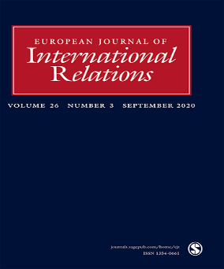
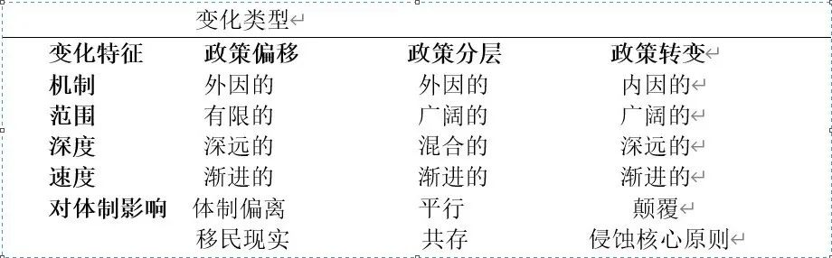

收录于合集

作品简介
【作者】 Lama Mourad,宾夕法尼亚大学佩里全球中心和哈佛大学政府学系及佩里全球中心的社会科学与人文研究理事会（SSHRC）博士后研究员，主要研究方向为移民政治和地方治理，特别聚焦中东地区。
Kelsey P Norman,莱斯大学贝克研究院公共政策方向研究员，主要研究方向为中东北非地区东道国对于移民和难民安置问题的应对。
【编译】 任潇依 （国政学人编译员 北京大学国际关系学院本科生）
【校对】 杨稚珉
【审核】 陈晓茹
【排版】 卢奕财
【美编 】聂涵琳
【来源】 Lama, M., &Norman, K.P. (2020). Transforming refugees into migrants: institutional change and the politics of international protection, European Journal of International Relations , 26(3), 687-713, DOI: 10.1177/1354066119883688
期刊简介

《欧洲国际关系杂志》（EJIR）是欧洲政治联盟国际关系常设小组(SGIR of the European Consortium for Political Research)同行评议中产生的旗舰杂志，自1995年创刊以来，已经成为国际关系学界的主流期刊并且独立发声。该期刊以欧洲为根源，在二十余年的发展当中一直致力于摘要和概括最能反映学界研究成果的前沿理论争辩问题与理论严谨的实证分析。该期刊2019年影响因子为2.756。
将“难民”转变为“移民”：制度性变革和国际保护中的政治
Transforming refugees into migrants: institutional change and the politics of international protection
Lama Mourad Kelsey P Norman
内容提要
自从2015年难民危机之后，许多学者已经对“难民”(refugee)和“移民”(migrant)在法律上的类别区分进行了大量研究。尽管移民研究者从制度变迁和政策分层的角度解释了混淆二者情形的增多，但作者则认为还应考虑国家和国际组织所采用的减少难民获取合法保护途径的目的性政策。本文指出导致“移民”和“难民”区分难题增多的四种“政策转变”实践，采用历史制度主义方法和大量经验资料，其中包括2013-2016年间在埃及、黎巴嫩、摩洛哥、突尼斯和土耳其进行的为期3年的初步实地调查成果，并由此证实了这些国家正积极寻求在难民选择上获得更大自主权，以免令自身处于被迫履行国家责任的境地。
在所有多边或全球移民制度中，全球难民制度的制度化程度最高，其体制的核心正是对“难民”有别于其他种类移民的特性认知。在法律上，难民指的是被联合国难民署或东道国政府认定的、因《关于难民地位的公约》（the 1951 UN Convention Relating to the Status of Refugees，以下简称《公约》）中详述的原因而逃离本国并应当受到国际保护的个人。但在事实层面上，其区别于其他移民类别的独特性十分令人担心。部分学者认为这主要归因于国际移民模式的变化，或是反映出该移民类别最初产生的历史背景。在不否定这些因素重要性的基础上，本文认为还应当考虑到一些管理难民的机构在制度上的改变忽视了难民群体的独特性。此外，本文还注意到关键角色（主权国家和国际组织）也在逐步侵蚀难民群体的独特性。
本文采取了历史制度主义的方法，认为之所以无法用现有的难民定义来阐释现代移民问题并不完全是因为“政策偏移”(policy drift)或“政策分层”(policy layering)，还应包括“政策转变”（policy conversion），即重新调整现有制度使之得以满足新的目标和功能。本文还特别指出可导致“移民”和“难民”概念混淆的四种主要政策实践：（1）通过责任转移和其他境外化的做法来限制入境；（2）通过在程序和管理上设置障碍来增加避难所获取和本土融合的难度；（3）基于族群标准将部分移民或难民排除在外；（4）重新安置方案中设置了《公约》以外的准则。
本文写作基于实地调查和二手资料，并主要聚焦中东和北非地区，因为该地区有着最多的移动人口，是进入欧洲的中转枢纽。而且作为将传统上输出移民的发展中国家与接纳移民的发达国家联系在一起的关键地区，该地区最适宜用以研究国家的政策实践，以及难民体制中的部分重要准则，同时也能对其他区域的情况作出一定程度的反映。与其他研究不同的是，本文将概述推翻难民体制原始目标的内在过程，并从难民个体的反抗中看到整个体系正日益弱化权益保护和难民群体特殊性的现状。
01
**** 国际关系的模式变化
什么导致了国际难民体制的变化？变化的后果对于难民身份的独特性又意味着什么？本文将从历史制度主义的视角，聚焦该变迁的深度和广度，以及逐渐作用于难民体制转变的内在性变化。现有研究或是关注新参与者和国际机构如何成为该体制中重要因素，或关注已经过时的难民体制如何不再满足当代世界和当代移民特性。在下文中，作者将分析这些现有论点并使之同历史制度主义的阐释进行对话，这将有利于我们理解：（1）变化是如何产生的；（2）哪些因素发挥了作用；（3）逆向变化是否可能，如果可能又会如何发生。
02
**
**
找到现有的解释
许多人认为，《公约》当中对难民的定义过于狭窄并具有政治偏见，除了“政治迫害”因素之外，由于其他原因逃离的个人均被排除在外。但正如本文表明的，主权国家和国际机构的行动也使得对难民的定义变得更加困难。
如果认为是外部环境变化使得原有体制的原始目的不再适用于今天的移民现实，这种解释就称为“政策偏移”。但只关注历史环境变迁是不够的，该解释只看到了外在因素，忽略了国家和国际组织采取的刻意模糊难民群体独特性的行动。
第二种解释称为“政策分层”，即国家会在具有制度重叠的地方绕过现有体制而使用另一种体制。具体机制例如对于未经许可将外国人送至边境的公司施加制裁，及其他一些“远程操控”(remote control)的安全措施。
但本文认为除了“政策分层”之外，国家和国际机构还会试图转变而非取代现有的制度框架，此外行动主体在几乎没有发生制度重叠或触及难民体制核心原则的地方也会有所行动。本文认为正是导致这些内在性变化的根源构成了“政策转变”，即通过调整让旧体制和新目标相辅相成。通过模糊难民和寻求庇护者(asylum seekers)群体的身份特性，国家可以在接纳难民方面获得更大掌控权。

表一：国际难民体制内部的政策变化模式
03
确定体制的根源
了解难民体制内对一个统一的“难民”定义是如何发展的对于本文的讨论十分重要。早期欧洲各国政府对于难民和移民不加区分，几乎不采取限制入境措施。但自18世纪以来，各国对策有所改变，形成了以国家为中心的临时性接收被流放者(exiles)和难民的政策。在1905年的《英国外侨法》(British Alien Act)中认定难民是“人数上只有几百人，并以个体为单位的受迫害的政治积极分子”，移民则是“人数可达成千上万的穷困民众”。一战后的人口迁徙潮促进了国际联盟难民署(HCR)的诞生，但它并未成功解决该如何认定难民的难题，定义难民的关键仍旧是难民身份分类和难民来源地，难民和经济移民的区别依旧模糊。
20世纪30年代爆发的经济危机体现出这种临时性难民体系中的制度弱点。这种国际保护的缺失使许多犹太难民被欧美国家排斥在外，这也很可能导致了纳粹将“灭绝”(extermination)视作解决犹太人问题的最终办法。正是这样惨痛的教训促使人们有意愿建立起一个维护难民的法律框架，使他们能够申请庇护并避免被遣返。1951年，联合国难民组织在《关于难民地位的公约》中写入“将人道主义移民同经济移民分离”就体现了这一原则，该《公约》也和联合国难民署共同构成了这一制度化程度最高的多边移民管理体制的基础。
在此体系中，“难民”指的是受到联合国难民署或东道国政府的认定、出于被迫害的恐惧而不得不离开原国家的个人。“移民”则是可以包含“难民”在内的一个更广阔的类别。但在通俗语境下，“移民”常成为“难民”的反义词，并包含了那些为了寻求经济机会而背井离乡的个体。但本文认为，主权国家和其他机构会借机采取模糊“移民”和“难民”间概念的方式，甚至是破坏该制度本身，使现实情况更接近《公约》产生之前。
04
主权国家和国际组织引导的政策转变
正如前面提到的，制度化规则和地方法规之间的分歧及新环境带来的挑战会为政策转变提供契机。上文曾列举的四种重要政策实践会分别出现在提供国际保护过程中的不同时间点，下面本文将考察这些实践是如何阻碍国际保护实施的。本文认为这些措施实行后使难民获得保护变得更加困难，从而促使他们选择其他途径，并因此受到政治化的影响而被迫自称“移民”。
一、通过庇护许可进行境外管控
由于国际难民体制内含了“责任分担”的特性，从历史上看，接纳难民的重担主要落在了那些邻国身上，但难民很可能发觉他们在寻求保护的第一站上就难以动弹。许多西方国家采取“远程控制”来限制不受欢迎的移民及寻求庇护者入境，具体措施包括在他国境内设立特殊区域、让他国加强巡逻来帮助抵制未获批准的移民等。例如2000年代初一些欧洲政府就施压巴尔干和北非地区国家来帮助他们限制非正规的移民。此外，如果从欧盟得到的好处大于限制移民的代价，一些周边国家就可能同欧盟签署“重新接纳协议”(readmission agreement)。这样一来，本应致力于分担移民接纳责任的伙伴关系反而成为了限制移民而存在。同时难民又被再一次和其他移民混为一谈，导致了难民保护进程的倒退。
二、东道国官僚和程序上的障碍
尽管“难民身份确定”(RSD)可以被视为解决难民问题的可行对策，但在审批时间和程序上的挑战常常使之产生严重拖延。导致拖延的原因是多样的，从人手不足、难民署经费不足，到东道国设置的重重障碍，但不变的结果就是难民们在缺乏保护和工作机会的情况下在中转国无限期滞留。尽管RSD在表面上仍旧发挥着作用，但这些难民只能选择以非正规身份留在当地，或者和其他类别的移民一起去往目标西方国家，但无论如何他们都变得和经济移民更加类似。某些情况下，即使是在联合国难民署登记的难民也会受到一些国家的限制措施，从而无法获得应有的法定地位和保护。主权国家尽管没有采取替代性制度，但是通过侵蚀现有的难民身份认定制度同样能够阻碍难民获得国际保护。
三、基于族群标准进行排斥
“难民身份初步界定”(PFRSD)，也称为“基于族群身份确定”，是最为广泛运用的难民身份界定办法，然而其在实际运用中仍存在缺乏理解和低制度化的问题。更重要的是，该标准是设计用以“吸纳”（inclusion）难民而非“排斥”（exclusion）难民，但实际上，在发达国家和发展中国家内部，它却在越来越多的场合被用于限制获取庇护，从而产生曲解。例如在“欧盟- 土耳其”难民协议(the EU-Turkey deal)中就用难民来源国来确定难民的身份地位。此外，一些国际组织如国际难民组织(IRO)也将基于族群的标准纳入对难民资格的评判，并以此排除不合格者。因此，这一点也可体现东道国和国际组织在主动转变现有难民体制的核心原则。
四、在重新安置计划中纳入非《公约》标准
虽然《公约》本身给予的定义就已经为确定难民身份提出了挑战，但相关国家在重新安置计划中纳入额外准则更加威胁到难民身份的独特性。根据黎巴嫩贝鲁特难民再安置点的一位官员介绍，各国RSD的具体标准都不相同，即使是联合国难民署的工作人员也不完全清楚。尽管相关组织可以推荐一些个人和家庭获得重新安置，但政府仍可进行二次决定，并以未指明的理由拒绝一些推荐。许多国家还会以维护本国安全、难民能否成功立足和融入当地社会作为准则来考虑是否接纳难民。例如2015年10月，加拿大总理和保守党领袖史蒂芬·哈珀(Stephen Harper)就承认优先安置“是基督徒和其他宗教少数群体”的叙利亚难民。通过与保护需求和难民脆弱性无关的标准来决定是否提供长期保护，这样的做法又一次破坏了难民和经济移民之间的分界。这些在《公约》之外的准则对于联合国难民署的核心职能——“不排斥最穷困者，并在边境处扩大难民接纳量”产生了深远的影响。上述变化是内在的，并且涉及到难民体系内部的制度变化。
05
讨论和总结
本文研究结果支持了这样的观点，即除了政策偏移和政策分层之外，政策转变也是抹杀移民和难民间区别的一大因素。主权国家和国际移民机构会转变那些原本保护难民群体特性的制度，使之对满足国际保护条件的方式和时间具有更大控制权。正如菲茨帕特里克(Fitzpatrick)所言，“危机的存在不是因为《公约》未能满足寻求庇护者的需要，相反，它太能满足了，从而使缔约国负担沉重得在政治上已无法承担”。因此，《公约》在解决当代移民现状的同时也提供了可以削弱它的措施。
其实正是难民体制内部的一些基本分歧，例如提供庇护和主权之间不可完全调和的矛盾、给予难民权利和保护的“代价”等，使得主权国家有了转变制度的空间和动因。这些矛盾也使得那些关注难民保护者对于任何重新协商《公约》中定义的行为保持警惕，因为这可能危及其原本尊奉的那些权利、原则和标准。而且在当前政治环境下，各国只可能商议出一个更具限制性的版本，新文件获得认可又需要花费数十年时间。但无论如何，难民体制都不是静止存在的，它受到国家和国际组织有意图的转变，而鉴于其广阔的范围、天然的渐进性及外部条件的不断变化，这种内在的转变也很难快速发生逆转。
译者评述
难民问题特别是近十年来爆发的欧洲难民危机一直是国际社会关注和讨论的焦点问题之一，许多研究者可能从文化冲突、去全球化、欧盟内部的难民分配体制等等角度来考虑该问题，本文作者则以移民和难民二者的应有分别和人为混淆入手，从历史制度主义的视角，探讨难民问题的历史演变和相关行为主体出于自身利益考虑进行的目的明确的政策转变。
纵观全文可以发现，确立难民身份的独特性应当是成功提供国际保护的起点，但无论是受制于特定历史条件而产生的狭隘定义，还是出于维护既得利益考量而带来的刻意混淆，都使得难民群体长期以来没有因其特有的弱势身份而享受到相应的制度保护和应得权利，而是被迫和具有其他身份背景的移民混淆在一起来争夺紧缺的资源，这其实是对于人道主义保护的破坏和曲解。
解决该问题的过程也注定是复杂且漫长的，因为出于对维护主权和维持社会稳定、促进经济发展、保护难民的代价等等因素的考量，主权国家在接纳难民和寻求庇护者时的被动将会大于主动。为了督促其不折不扣地履行约定，相关国际组织就需要获取更大的权威、更多的资源，并提供更有力的激励惩罚机制来对缔约国进行监督和约束；另一方面，国际组织的原则制定、功能行使以及国家间条约的缔结又在很大程度上取决于各个主权国家的意志，因此各个国家的利益主张又需要被纳入考量。总之，这一过程仍旧需要各国的携手努力，也需要更加严密、完善、适应现实的国际难民制度体系的产生，在此过程中，每一点微小的进展都值得受到关注和鼓励。
文章观点不代表本平台观点，本平台评译分享的文章均出于专业学习之用, 不以任何盈利为目的，内容主要呈现对原文的介绍，原文内容请通过各高校购买的数据库自行下载
**
**
**
**
**
**
添加 “国小政”微信
获取最新资讯


国政学人
支持学术公益与知识传播
微信扫一扫赞赏作者 __赞赏
已喜欢，对作者说句悄悄话
取消 __
发送给作者
发送
最多40字，当前共字
上一页 1/3 下一页
长按二维码向我转账
支持学术公益与知识传播
受苹果公司新规定影响，微信 iOS 版的赞赏功能被关闭，可通过二维码转账支持公众号。